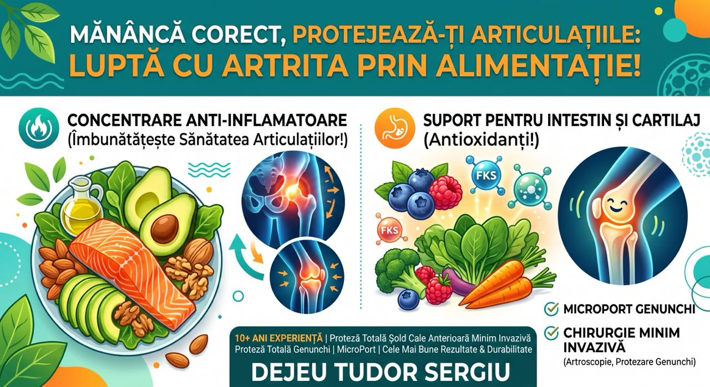
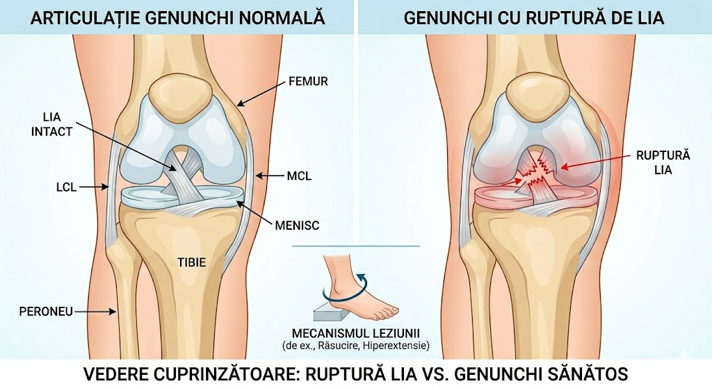

Informații detaliate despre tehnici chirurgicale moderne, recuperare accelerată și gestionarea afecțiunilor articulare.
Articolul 1 • Ghid Clinic Pacienți
Când este momentul pentru o proteză și când putem salva articulația?
Evaluare pas cu pas între terapiile regenerative și artroplastia minim invazivă
Autor: Dr. Dejeu Tudor Sergiu • Medic Primar Ortopedie și Traumatologie
Una dintre cele mai frecvente dileme ale pacienților la cabinet este alegerea momentului optim pentru intervenție. Frica de operație îi face pe mulți să suporte dureri severe ani la rând, în timp ce alții doresc o rezolvare chirurgicală când încă există resurse pentru conservarea articulației.
Mersul din prima zi după proteza de șold: Mit sau Realitate?
Autor: Dr. Dejeu Tudor Sergiu • Medic Primar Ortopedie și Traumatologie
Pentru mulți pacienți, ideea unei proteze de șold este asociată cu o perioadă lungă de imobilizare, spitalizare prelungită și săptămâni întregi de recuperare dureroasă. Cu tehnica modernă de abord direct anterior, această percepție aparține trecutului.
Ce înseamnă abordul direct anterior?
Aproape toate abordurile clasice de protezare a șoldului (posterior sau antero-lateral) necesită secționarea sau dezinserția unor grupe musculare sau tendinoase importante pentru a ajunge la articulație. În schimb, prin abordul direct anterior, chirurgul pătrunde între mușchi, utilizând spațiile intermusculare naturale.
Avantajele directe pentru pacient:
Fără tăiere de mușchi: Conservarea integrală a musculaturii menține stabilitatea naturală a articulației încă din momentul finalizării operației.
Mers din prima zi: Pacientul poate pune greutate pe piciorul operat și poate face primii pași la doar câteva ore după intervenție sau a doua zi dimineață.
Risc minim de luxație: Deoarece capsulei musculare din spate îi este păstrată integritatea, riscul ca proteza să iasă din articulație este drastic redus.
Fără restricții severe postoperatorii: Nu mai sunt necesare pernele speciale între picioare sau înălțătoarele speciale de toaletă obligatorii în abordurile clasice.
Concluzie: Mersul din prima zi după artroplastia de șold nu este un mit, ci standardul de îngrijire în chirurgia modernă minim invazivă.
Trimite acest articol:

Articolul 3 • Prevenție & Nutriție
Dietă și artroza: ce ajută cu adevărat?
Autor: Dr. Dejeu Tudor Sergiu • Medic Primar Ortopedie și Traumatologie
Deși nicio dietă nu vindecă artroza, anumite alimente reduc inflamația sistemică și susțin sănătatea cartilajului articular:
Accent pe efectul antiinflamator: Prioritizați alimentele de tip mediteranean — pește bogat în omega-3 (somon, sardine), ulei de măsline extra virgin, nucifere și legume cu frunze verzi.
Susținere pentru intestin și cartilaje: Fructele de pădure și legumele intens colorate oferă antioxidanți valoroși care combat stresul oxidativ de la nivelul articulațiilor.
Trimite acest articol:

Articolul 4 • Chirurgie Artroscopică
Ruptura de Ligament Încrucișat Anterior (LIA)
Autor: Dr. Dejeu Tudor Sergiu • Medic Primar Ortopedie și Traumatologie
Ruptura ligamentului încrucișat anterior (LIA) este una dintre cele mai frecvente și invalidante leziuni ale genunchiului, întâlnită adesea în rândul sportivilor, dar și în timpul activităților zilnice banale.
Atunci când ligamentul este rupt complet, genunchiul își pierde stabilitatea. Pentru a reda stabilitatea articulației și pentru a preveni degradarea timpurie a cartilajului (artroza), reconstrucția artroscopică minim invazivă reprezintă soluția modernă și eficientă.